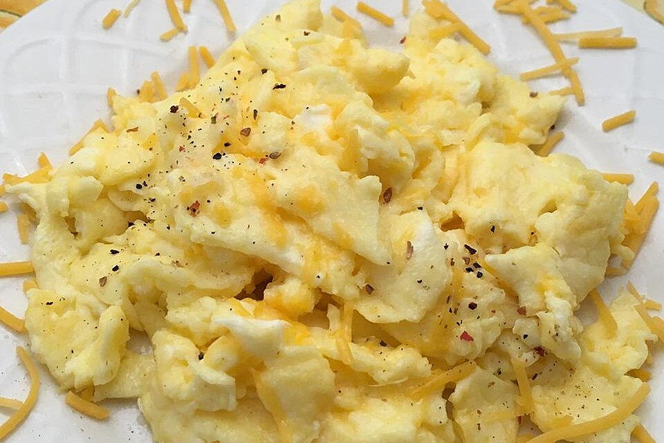

Scrambed Eggs

Description
Classic recipe of scrambled eggs!
Ingredients
- A few eggs
- A little bit of sliced Cheddar cheese
- A few thin slices of ham (Optional)
- A little bit of heavy whipping cream
- A little bit of butter
Steps
- Whisk the eggs together in a small bowl until smooth. Mix in Cheddar cheese, ham, and heavy cream.
- Melt butter in a skillet over medium heat. Pour in egg mixture; cook and stir until set but still moist, 3 to 5 minutes.